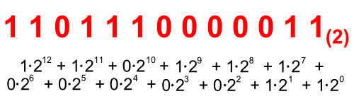
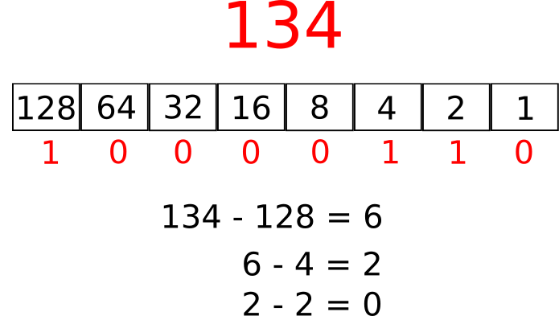

Licenca
To delo je na voljo pod pogoji slovenske licence Creative Commons 2.5:
priznanje avtorstva - nekomercialno - deljenje pod enakimi pogoji.
Celotna licenca je na voljo na spletu na naslovu http://creativecommons.org/licenses/by-nc-sa/2.5/si/. V skladu s to licenco je dovoljeno vsakemu uporabniku delo razmnoževati, distribuirati, javno priobčevati, dajati v najem in tudi predelovati, vendar samo v nekomercialne namene in ob pogoju, da navede avtorja oziroma avtorje in izdajatelja tega dela. Če uporabnik delo predela, kar pomeni, da ga spremeni, preoblikuje, prevede ali uporabi to delo v svojem delu, lahko predelavo dela ponudi na voljo le pod pogoji, ki so enaki pogojem iz te licence oziroma pod enako licenco.

Dvojiški zapis
Si ugotovil vrednost števila v prejšnjem primeru?

Huh, dolga, a ne? Pa dajmo to sešteti. Pred tem si še poglejmo, kakšne so uteži v dvojiškem sistemu:
Seštejmo sedaj ustrezne uteži pri našem primeru:
4096 + 2048 + 512 + 256 + 128 + 2 + 1 = 7043
V dvojiškem sistemu je mogoče zapisati poljubno desetiško celo število. Le malo več števk v primerjavi z desetiškim potrebujemo.
Opazimo lahko, da je vsaka naslednja utež dvakratnik prejšnje. Zato lahko preprosto rečemo, da imamo za zapis števil na voljo sicer samo dve števki, a njihova pozicija določa, ali so vrednosti 1, 2, 4, 8, 16, 32, 64, 128, ... vsebovane v številu.
Pretvorba iz desetiškega v dvojiški zapis
Kaj pa pretvorba iz desetiškega sistema v dvojiški? Na voljo imamo števila 1, 2, 4, 8, 16, 32,... Med njimi poiščimo največje število, ki je še manjše ali enako številu, ki ga pretvarjamo. Če bi na primer želeli pretvoriti število 134 v dvojiško, bi ugotovili, da je največja dvojiška utež, ki je manjša od 134 enaka 128. Zato si zapišemo 1 in 128 odštejemo od 134 ter dobimo 6. Sedaj poskušamo naprej po vrsti: najprej preverimo, ali je 64 manjše od 6. Ker ni, dopišemo tisti prejšnji enici eno ničlo in dobimo 10. Nato poskusimo z 32. Ker tudi to ni manjše od 6, dopišemo še eno ničlo in dobimo 100. Nato poskusimo z 8. Ker tudi to ni manjše od 6, dopišemo še eno ničlo in dobimo 10000. Nato poskusimo s 4. Ker je to število manjše od 6 dopišemo eno enico in dobimo 100001. Potem 4 odštejemo od 6, dobimo 2 ter poskušamo naprej z utežjo 2. Ker je ta enaka 2 pripišemo še eno enico ter dobimo 1000011. Nato odštejemo 2-2 in dobimo 0. Zato na konec dodamo še zadnjo ničlo. Sedaj je postopek končan. Število 134, zapisano dvojiško, je torej 10000110.
Postopek pretvorbe iz destiškega sistema v binarni je opisan na spodnji sliki:

Poizkusi pretvoriti število 9050 iz desetiškega v dvojiški sistem.